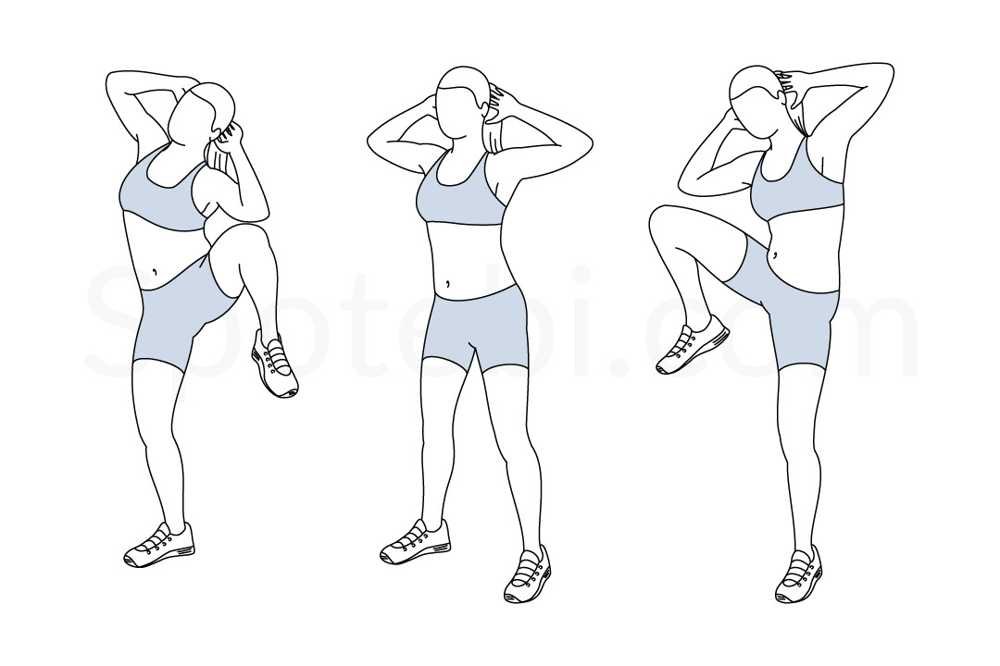

standing side crunch

ยืนตรง ขาแยกห่างจากกันเล็กน้อยสองมือยกประสานไว้ที่หลังศีรษะจากนั้นย่อตัวลงคล้ายเวลาที่เราทำท่าสควอทช์ ยืดตัวขึ้นพร้อมกับยกขาขวาขึ้นด้านข้าง เอียงตัวไปทางขวาเล็กน้อยให้ศอกขวาแตะกับเข่า กลับสู่ท่าเริ่มต้น ทำซ้ำสลับข้าง